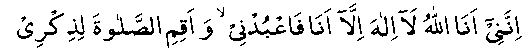

Hadhrat ‘Umar (RA), of whom all the Muslims are justly proud, and the disbelievers still dread, was most adamant in opposing Nabi (Sallallahu Alayhi Wasallam) and very prominent in persecuting the Muslims before he embraced Islam. One day, the Quraish in a meeting called for somebody to volunteer himself for the assassination of Nabi (Sallallahu Alayhi Wasallam). 'Umar (RA) offered himself for this job, at which everybody exclaimed: "Surely, you can do it, 'Umar!"
With sword hanging from his neck, he set out straight away on his evil mission. On his way he met Sa'ad bin Abi Waqqas of the Zuhrah clan. “Where are you going to, Umar?” inquired Sa'ad (RA).
Umar replied: "I am going to finish Muhammad."
Sa’ad (RA) warns Umar: "But don’t you see that Banu Hashim, Banu Zuhrah and Banu Abde Munaf are likely to kill you in retaliation?"
'Umar (gets upset with the warning): "It seems that you also have renounced the religion of your forefathers. Let me settle with you first."
So saying, Umar drew out his sword. Sa'ad (RA), announcing his Islam, also took out his sword. They were about to start a fight when Sa'ad (RA) said: "You had better first set your own house in order. Both your sister and brother-in-law have accepted Islam."
Hearing this, Umar flew into a towering rage and turned his steps towards his sister's house. The door of the house was locked from inside and both husband and wife were receiving lessons in the Qur-aan from Hadhrat Khabbab (RA). 'Umar knocked at the door and shouted for his sister to open it. Hearing the voice of 'Umar, Hadhrat Khabbab (RA) hid himself in some inner room forgetting to take the pages of the Holy Qur-aan with him. When the sister opened the door, 'Umar hit her on the head, saying: "O, enemy of yourself, have you also forsaken your religion."
Her head began to bleed. Umar then went inside and inquired, "What were you doing and who was the stranger I heard from outside?" His brother-in-law replied, "We were talking to each other." 'Umar said to him, "Have you also forsaken the faith of your forefathers and gone over to the new religion?" The brother-in-law replied, "But what if the new religion be the better and the true one?" 'Umar became furious and pounced on him, pulling his beard and beating him mercilessly. When the sister intervened, he smote her face so violently, that it bled most profusely.
She was, after all, 'Umar's sister, she burst out: "'Umar! We are beaten only because we have become Muslims. Listen! We are determined to die as Muslims. You are free to do whatever you like."
When 'Umar had cooled down and felt a bit ashamed over his sister's bleeding, his eyes fell on the pages of the Qur-aan left behind by Hadhrat Khabbab (RA). He said, "Alright show me, what are these?" "No," said the sister, "you are unclean and no unclean person can touch the Qur-aan." He insisted, but the sister was not prepared to allow him to touch the Qur-aan unless he washed his body. 'Umar at last gave in. He washed his body and then began to read the Qur-aan. It was Surah "Taha". He started from the beginning of the Surah, and he was a changed man altogether when he came to the verse:

"Lo! I, indeed I am Allah. There is none worthy of worship save Me. So serve me and establish Salaah for My remembrance."
He said: "Alright, take me to Muhammad (Sallallahu Alayhi Wasallam)."
On hearing this, Hadhrat Khabbab (RA) came out from inside and said: "O, 'Umar! Glad tidings for you. Yesterday (on Thursday night) Nabi (Sallallahu Alayhi Wasallam) prayed to Allah Ta’ala, O, Allah strengthen Islam with either 'Umar or Abu Jahl, whomsoever You like'. It seems that his prayer has been answered in your favour."
'Umar then went to Nabi (Sallallahu Alayhi Wasallam) and embraced Islam on Friday morning. 'Umar's Islam was a terrible blow to the morale of the unbelievers, but still the Muslims were few in number and the whole country was against them. The disbelievers increased their efforts to completely wipe out the Muslims and Islam. With Umar (RA) now on their side, the Muslims started to say their Salaah in the Haram.
Hadhrat Abdullah bin Mas'ood (RA) says: "'Umar's (RA) Islam was a big victory, his emigration to Madinah a tremendous reinforcement, and his appointment as Khalifa, a great blessing for the Muslims."